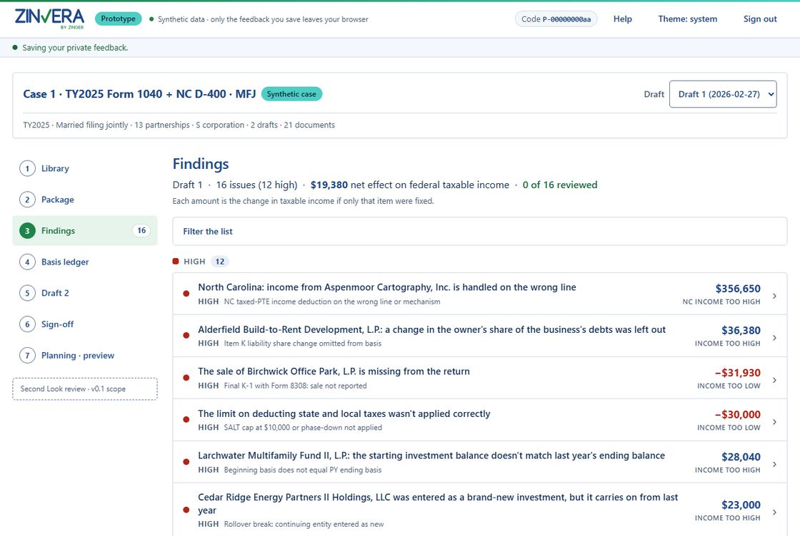

Zinvera
Invitation-only pilotAI-assisted tax return review for CPA firms
Zinvera is designed to read the draft return beside the K-1s, the broker statements and last year's return, carry each partner's basis forward year to year, follow each finding from one draft to the next, and show the reviewer the line each finding came from and the authority behind it. It sits after the firm's tax software and before sign-off, and it prepares, changes and files nothing.
- Basis continuity ledger for each partnership and S corporation
- Cross-document checks against K-1s, broker composites, W-2s and the prior-year return
- Draft 1 → Draft 2 tracking: fixed, not fixed, fixed incorrectly, regression, new
- Form 8879 currency check against the current draft
- Evidence and citations on each finding, plus a planning preview
AI-assisted features (document reading, judgment flags, plain-language explanations, and Zinn, an assistant that answers questions about the return) are in development for the first pilot release; the review engine's tax rules run today, and every number stays in code.
In pilot on synthetic case files with pre-computed findings; the rule set is not yet signed off by a CPA, and Zinvera is not yet available for client data. Not tax, legal or accounting advice.

Prototype screen. Synthetic case file; fictional names and figures.